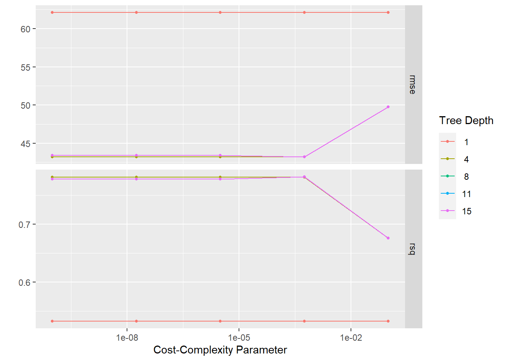
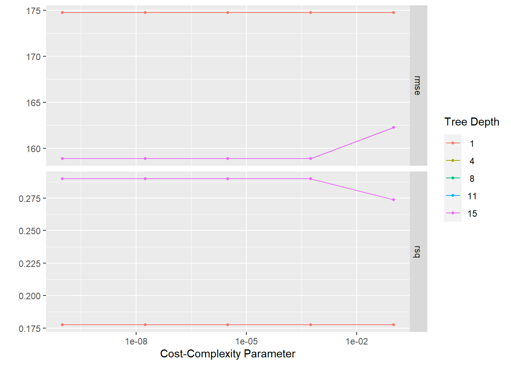
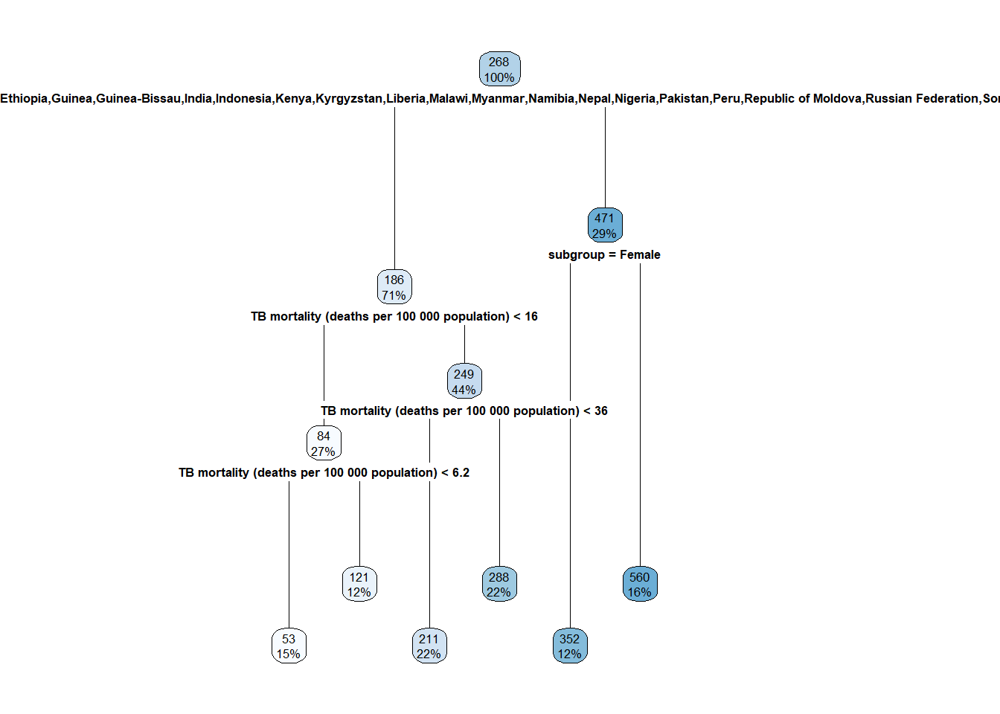
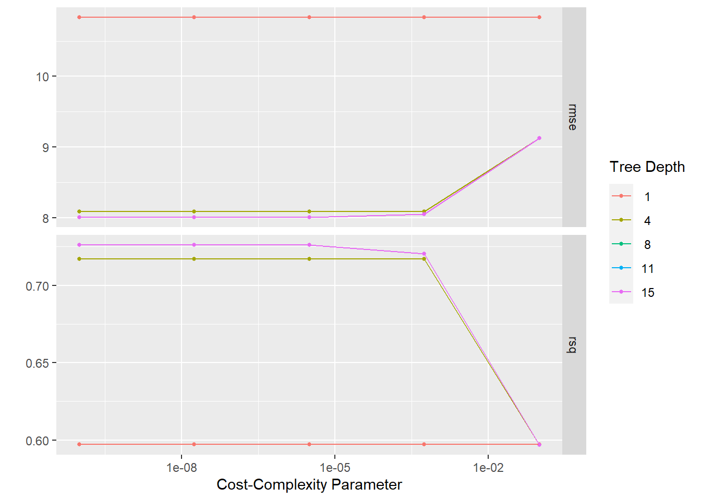
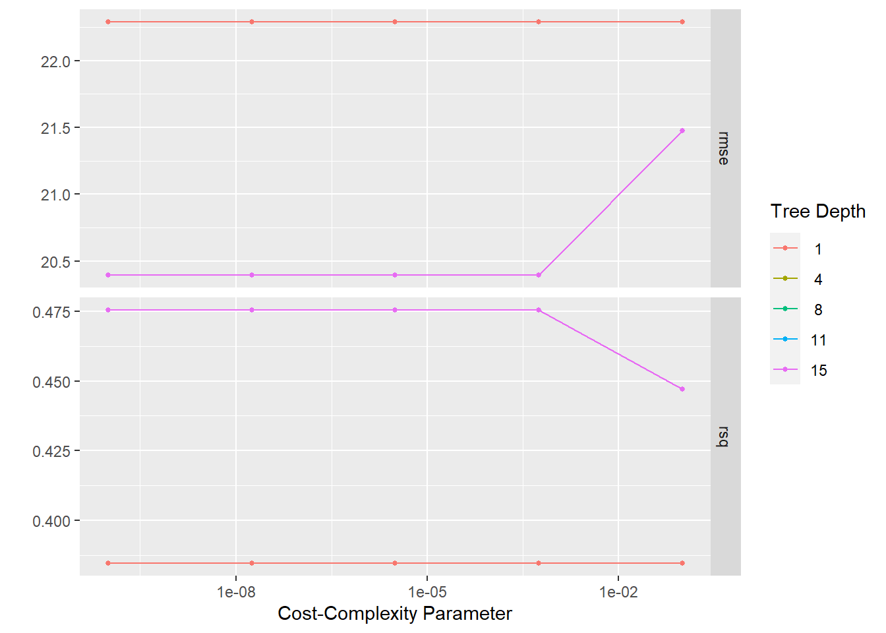
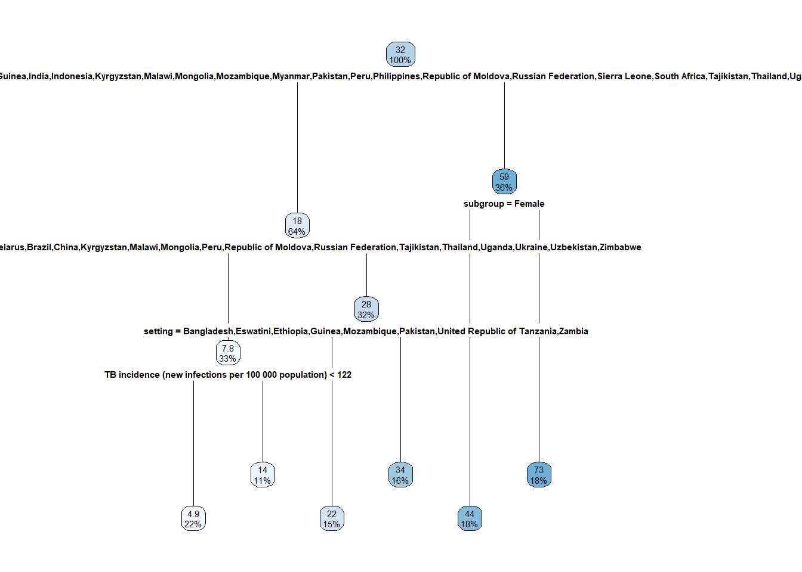
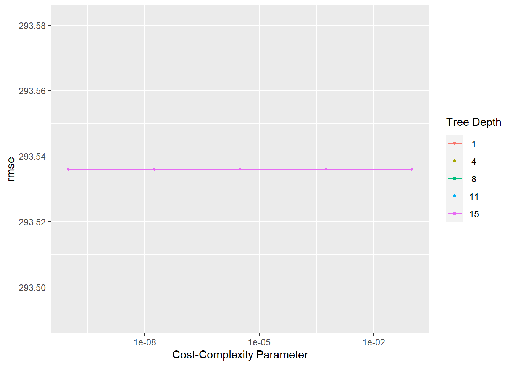
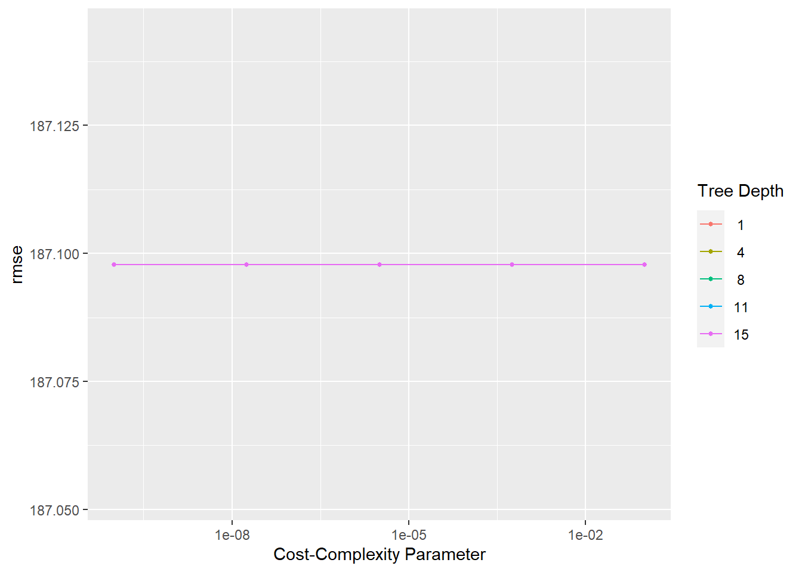

knitr::read_chunk('statistical_analysis.R')Decision Tree Statistical Analysis
Processing script with R script code
This Quarto file runs the statistical analysis code from the statistical_analysis.r script. The best way to view the output of the script is to render the qmd and view the html document. The processed data is used for model fitting.
Note: this file takes approximately 10 minutes to render
To start, the needed packages are loaded, and the processeddata.rda is loaded from the processed_data folder.
Setup
The statistical_analysis.r script needs to be indicated as the file from which to pull code chunks from.
Load packages and data
The packages and data are loaded.
#load needed packages
library(here)
library(tidymodels)
library(tidyverse)
library(ggplot2)
library(rpart.plot)
library(vip)#path to data
data_location <- here::here("data","processed_data","processeddata.rda")
#load data.
load(data_location)Basic modelling
For some basic modeling, I will be fitting linear models to the TB outcomes with the subgroups as predictors. Subgroups are the main difference between populations other than country which is why I chose these as the bivariate models. This will offer another view of the data. The prediction model also offers a way to explore the data by submitting a sample prediction of TB incidence for females and males in Central African Republic.
# fit linear model with TB incidence as outcome, subgroup as predictor
lm_mod <- linear_reg()
#fit model with high burden countries
inclm_fit <- lm_mod %>%
fit(`TB incidence (new infections per 100 000 population)` ~ subgroup,
data = hbmodel) #fit linear model
incfittable <- tidy(inclm_fit)
print(incfittable) #produce tidy table of fitted model# A tibble: 2 × 5
term estimate std.error statistic p.value
<chr> <dbl> <dbl> <dbl> <dbl>
1 (Intercept) 194. 24.2 8.03 2.49e-12
2 subgroupMale 126. 34.2 3.69 3.70e- 4table_file1 = here("results", "statistical_analysis", "model fit tables", "incfittable.rds")
saveRDS(incfittable, file = table_file1) #save summary table
#fit model with full data
inclm_fitFD <- lm_mod %>%
fit(`TB incidence (new infections per 100 000 population)` ~ subgroup,
data = obmodel) #fit linear model
incfittable2 <- tidy(inclm_fitFD)
print(incfittable2) #produce tidy table of fitted model# A tibble: 2 × 5
term estimate std.error statistic p.value
<chr> <dbl> <dbl> <dbl> <dbl>
1 (Intercept) 44.9 7.32 6.13 0.00000000285
2 subgroupMale 21.6 10.3 2.09 0.0379 table_file2 = here("results", "statistical_analysis", "model fit tables","incfittableFD.rds")
saveRDS(incfittable2, file = table_file2) #save summary table
#prediction model using subgroup and setting
predinclm_fit <- lm_mod %>%
fit(`TB incidence (new infections per 100 000 population)` ~ subgroup + setting,
data = hbmodel) #fit linear model
predincfittable <- tidy(predinclm_fit)
print(predincfittable)# A tibble: 50 × 5
term estimate std.error statistic p.value
<chr> <dbl> <dbl> <dbl> <dbl>
1 (Intercept) 287. 54.6 5.27 3.20e- 6
2 subgroupMale 126. 15.4 8.18 1.17e-10
3 settingAzerbaijan -292. 76.4 -3.83 3.73e- 4
4 settingBangladesh -132. 76.4 -1.73 8.97e- 2
5 settingBelarus -324. 76.4 -4.24 1.01e- 4
6 settingBotswana -111. 76.4 -1.45 1.54e- 1
7 settingBrazil -305. 76.4 -4.00 2.21e- 4
8 settingCameroon -177. 76.4 -2.32 2.45e- 2
9 settingCentral African Republic 189. 76.4 2.47 1.70e- 2
10 settingChina -293. 76.4 -3.83 3.71e- 4
# … with 40 more rowsnew_points <- expand.grid(subgroup = c("Female", "Male"),
setting = "Central African Republic") #predicting CAR incidence based on sex
incpred <- predict(predinclm_fit,
new_data = new_points) #predictions
CIincpred <- predict(predinclm_fit,
new_data = new_points,
type = "conf_int") #confidence intervals for predictions
preddata <- new_points %>% #create plot data
bind_cols(incpred) %>%
bind_cols(CIincpred)
predplot <- ggplot(preddata, aes(subgroup))+
geom_point(aes(y = .pred))+ #plot predictions with confidence intervals
geom_errorbar(aes(ymin = .pred_lower,
ymax = .pred_upper),
width = .2) +
labs(y = "TB Incidence (per 100 000 population)",
title = "Predicted TB incidence for Central African Republic")
predplot
saveRDS(predplot, file = here("results", "statistical_analysis", "model fit tables", "prediction1.rds"))
# fit linear model using TB mortality as outcome, subgroup and setting as predictor
#fit model with high burden countries
mortlm_fit <- lm_mod %>%
fit(`TB mortality (deaths per 100 000 population)` ~ subgroup,
data = hbmodel) #fit linear model
mortfittable <- tidy(mortlm_fit)
print(mortfittable) #produce tidy table of fitted model# A tibble: 2 × 5
term estimate std.error statistic p.value
<chr> <dbl> <dbl> <dbl> <dbl>
1 (Intercept) 23.6 3.55 6.65 0.00000000179
2 subgroupMale 14.9 5.03 2.97 0.00380 table_file3 = here("results", "statistical_analysis", "model fit tables", "mortfittable.rds")
saveRDS(mortfittable, file = table_file3) #save summary table
#fit model with full data
mortlm_fitFD <- lm_mod %>%
fit(`TB mortality (deaths per 100 000 population)` ~ subgroup,
data = otherburden) #fit linear model
mortfittableFD <- tidy(mortlm_fitFD)
print(mortfittableFD) #produce tidy table of fitted model# A tibble: 2 × 5
term estimate std.error statistic p.value
<chr> <dbl> <dbl> <dbl> <dbl>
1 (Intercept) 5.36 1.25 4.29 0.0000242
2 subgroupMale 3.56 1.77 2.01 0.0449 table_file4 = here("results", "statistical_analysis", "model fit tables", "mortfittableFD.rds")
saveRDS(mortfittableFD, file = table_file4)
# fit linear model TB prevalence as outcome, subgroups as predictors
#fit model with high burden countries
prevlm_fit <- lm_mod %>%
fit(`TB prevalence (cases per 100 000 population)` ~ subgroup,
data = hbmodelprev) #fit linear model
prevfittable <- tidy(prevlm_fit)
print(prevfittable) #produce tidy table of fitted model# A tibble: 2 × 5
term estimate std.error statistic p.value
<chr> <dbl> <dbl> <dbl> <dbl>
1 (Intercept) 399. 53.2 7.50 0.0000000361
2 subgroupUrban 151. 75.3 2.01 0.0544 table_file5 = here("results", "statistical_analysis", "model fit tables", "prevfittable.rds")
saveRDS(prevfittable, file = table_file5) #save summary table
#fit model with full data
prevlm_fitFD <- lm_mod %>%
fit(`TB prevalence (cases per 100 000 population)` ~ subgroup,
data = obmodelprev) #fit linear model
prevfittableFD <- tidy(prevlm_fitFD)
print(prevfittableFD) #produce tidy table of fitted model# A tibble: 2 × 5
term estimate std.error statistic p.value
<chr> <dbl> <dbl> <dbl> <dbl>
1 (Intercept) 444 115. 3.87 0.00474
2 subgroupUrban -71.4 162. -0.440 0.671 table_file6 = here("results", "statistical_analysis", "model fit tables", "prevfittableFD.rds")
saveRDS(prevfittableFD, file = table_file6)The models indicate that subgroup has a significant influence on the outcomes since the estimates for the subgroup (being Male primarily or living in rural areas) increases the incidence, mortality, or prevalence. This is expected from the exploratory analysis.
The biggest issue with the linear modeling is the assumption that the relationship between predictors and outcomes is linear, and the model cannot be tuned and replicated.
Model fitting
Now that the data has been explored, I would like to start looking at models for the main outcomes and predictors of the data set. First, we will split the data into testing and training sets and set up the cross-validation folds. The training set will be used to tune the model parameters and the testing set will be used to test model performance on new data.
#split data into training and test sets for wide_data
obdtdatasplit <- initial_split(obmodel, prop = 3/4)
obdttest_data <- testing(obdtdatasplit)
obdttrain_data <- training(obdtdatasplit)
#set seed for reproducibility
set.seed(626)
#create cross-validation folds
obdtfolds <- vfold_cv(obdttrain_data, v = 5)
#split data into training and test sets for highburden
hbdtdatasplit <- initial_split(hbmodel, prop = 3/4)
hbdttest_data <- testing(hbdtdatasplit)
hbdttrain_data <- training(hbdtdatasplit)
#set seed for reproducibility
set.seed(626)
#create cross-validation folds
hbdtfolds <- vfold_cv(hbdttrain_data, v = 5)
#split data into training and test sets for other burden prevalence
obdtprevsplit <- initial_split(obmodelprev, prop = 3/4)
obdtprevtest_data <- testing(obdtprevsplit)
obdtprevtrain_data <- training(obdtprevsplit)
#set seed for reproducibility
set.seed(626)
#create cross-validation folds
obdtprevfolds <- vfold_cv(obdtprevtrain_data, v = 5)
#split data into training and test sets for high burden prevalence
hbdtprevsplit <- initial_split(hbmodelprev, prop = 3/4)
hbdtprevtest_data <- testing(hbdtprevsplit)
hbdtprevtrain_data <- training(hbdtprevsplit)
#set seed for reproducibility
set.seed(626)
#create cross-validation folds
hbdtprevfolds <- vfold_cv(hbdtprevtrain_data, v = 5)I will be tuning decision tree models for the main outcomes of TB incidence, TB mortality, and TB prevalence for both high burden countries and the other burden set. In the boosted_statistical_analysis.qmd file, a boosted tree model for each outcome is created for comparison. In order to be clear when saving the resulting tables and figures, the other burden outcomes from the decision tree model are labeled as obdt and the high burden as hbdt. The testing data will be fit to the best performing models.
Decision tree model for TB Incidence
#recipe predicting TB incidence
increcipe <- recipe(`TB incidence (new infections per 100 000 population)` ~.,
data = obdttrain_data)
#create tree model
treemodel <- decision_tree(
cost_complexity = tune(),
tree_depth = tune(),
) %>%
set_engine("rpart") %>%
set_mode("regression")
#create work flow
incwflow <- workflow() %>%
add_model(treemodel) %>%
add_recipe(increcipe)
#create grid of tuning parameters
tree_grid <- grid_regular(cost_complexity(),
tree_depth(),
levels = 5)
#set seed for reproducibility
set.seed(626)
#resample using cross-validation folds to tune parameters
inctree_resamp <- incwflow %>%
tune_grid(
resamples = obdtfolds,
grid = tree_grid,
control = control_grid(save_pred = TRUE)
)! Fold4: internal: A correlation computation is required, but `estimate` is constant and ha...#plot resampling by parameters
inctreeplot <- inctree_resamp %>% autoplot()
inctreeplot
treeplot1 = here("results", "statistical_analysis", "tune plots", "obdtinctreeplot.rds")
saveRDS(inctreeplot, file = treeplot1)
#show the best model
inctree_resamp %>%
show_best()Warning: No value of `metric` was given; metric 'rmse' will be used.# A tibble: 5 × 8
cost_complexity tree_depth .metric .estimator mean n std_err .config
<dbl> <int> <chr> <chr> <dbl> <int> <dbl> <chr>
1 0.0000000001 4 rmse standard 43.2 5 8.18 Preprocesso…
2 0.0000000178 4 rmse standard 43.2 5 8.18 Preprocesso…
3 0.00000316 4 rmse standard 43.2 5 8.18 Preprocesso…
4 0.000562 4 rmse standard 43.2 5 8.18 Preprocesso…
5 0.000562 8 rmse standard 43.2 5 8.15 Preprocesso…#select best model
obdtincbest_tree <- inctree_resamp %>% select_best("rmse")
#create final workflow
obdtincfinal_wf <- incwflow %>% finalize_workflow(obdtincbest_tree)
#fit the final workflow to the training data
obdtincfinal_fit <- obdtincfinal_wf %>% fit(obdttrain_data)
#find RMSE for model with training data
obdtincfitted <- augment(obdtincfinal_fit, obdttrain_data) %>%
select(`TB incidence (new infections per 100 000 population)`, .pred) %>%
rmse(truth = `TB incidence (new infections per 100 000 population)`, .pred)
obdtincfitted# A tibble: 1 × 3
.metric .estimator .estimate
<chr> <chr> <dbl>
1 rmse standard 25.5#save for later comparison: RMSE based on predictions from best model
obdtinc_rmse <- inctree_resamp %>%
collect_predictions(parameters = obdtincbest_tree) %>%
rmse(`TB incidence (new infections per 100 000 population)`, .pred) %>%
mutate(model = "obdtinc")The best tree model for TB incidence using the other burden countries has a depth of 4 with an RMSE of 51.6. This is a very low level of performance in predicting TB incidence (ideally would be closer to 1). The fitted model to the training data has a RMSE of 29.8.
#recipe predicting TB incidence
increcipe <- recipe(`TB incidence (new infections per 100 000 population)` ~.,
data = hbdttrain_data)
#create tree model
treemodel <- decision_tree(
cost_complexity = tune(),
tree_depth = tune(),
) %>%
set_engine("rpart") %>%
set_mode("regression")
#create work flow
incwflow <- workflow() %>%
add_model(treemodel) %>%
add_recipe(increcipe)
#set seed for reproducibility
set.seed(626)
#resample using cross-validation folds to tune parameters
inctree_resamp <- incwflow %>%
tune_grid(
resamples = hbdtfolds,
grid = tree_grid,
control = control_grid(save_pred = TRUE)
)
#plot resampling by parameters
inctreeplot <- inctree_resamp %>% autoplot()
inctreeplot
treeplot2 = here("results", "statistical_analysis", "tune plots", "hbdtinctreeplot.rds")
saveRDS(inctreeplot, file = treeplot2)
#show the best model
inctree_resamp %>%
show_best()Warning: No value of `metric` was given; metric 'rmse' will be used.# A tibble: 5 × 8
cost_complexity tree_depth .metric .estimator mean n std_err .config
<dbl> <int> <chr> <chr> <dbl> <int> <dbl> <chr>
1 0.0000000001 4 rmse standard 159. 5 10.8 Preprocesso…
2 0.0000000178 4 rmse standard 159. 5 10.8 Preprocesso…
3 0.00000316 4 rmse standard 159. 5 10.8 Preprocesso…
4 0.000562 4 rmse standard 159. 5 10.8 Preprocesso…
5 0.0000000001 8 rmse standard 159. 5 10.8 Preprocesso…#select best model
hbdtincbest_tree <- inctree_resamp %>% select_best("rmse")
#create final workflow
hbdtincfinal_wf <- incwflow %>% finalize_workflow(hbdtincbest_tree)
#fit the final workflow to the training data
hbdtincfinal_fit <- hbdtincfinal_wf %>% fit(hbdttrain_data)
#find RMSE for model with training data
hbdtincfitted <- augment(hbdtincfinal_fit, hbdttrain_data) %>%
select(`TB incidence (new infections per 100 000 population)`, .pred) %>%
rmse(truth = `TB incidence (new infections per 100 000 population)`, .pred)
hbdtincfitted# A tibble: 1 × 3
.metric .estimator .estimate
<chr> <chr> <dbl>
1 rmse standard 81.3#plot decision tree
hbdtincfinal_fit %>%
extract_fit_engine() %>%
rpart.plot(roundint = FALSE)
#save for later comparison
hbdtinc_rmse <- inctree_resamp %>%
collect_predictions(parameters = hbdtincbest_tree) %>%
rmse(`TB incidence (new infections per 100 000 population)`, .pred) %>%
mutate(model = "hbdtinc")The best tree model for TB incidence using the high burden countries has a depth of 4 with an RMSE of 159. This is also a low level of performance in predicting TB incidence. The fitted model to the training data has a RMSE of 81.3 which was much higher compared to the full dataset.
Decision tree model for TB Mortality
#recipe predicting TB mortality
mortrecipe <- recipe(`TB mortality (deaths per 100 000 population)` ~.,
data = obdttrain_data)
#create tree model
treemodel <- decision_tree(
cost_complexity = tune(),
tree_depth = tune(),
) %>%
set_engine("rpart") %>%
set_mode("regression")
#create workflow
mortwflow <- workflow() %>%
add_model(treemodel) %>%
add_recipe(mortrecipe)
#set seed for reproducibility
set.seed(626)
#resample using cross-validation folds to tune parameters
morttree_resamp <- mortwflow %>%
tune_grid(
resamples = obdtfolds,
grid = tree_grid,
control = control_grid(save_pred = TRUE)
)! Fold1: internal: A correlation computation is required, but `estimate` is constant and ha...! Fold2: internal: A correlation computation is required, but `estimate` is constant and ha...! Fold4: internal: A correlation computation is required, but `estimate` is constant and ha...#plot resampling by parameters
morttreeplot <- morttree_resamp %>% autoplot()
morttreeplot
treeplot3 = here("results", "statistical_analysis", "tune plots", "obdtmorttreeplot.rds")
saveRDS(morttreeplot, file = treeplot3)
#show the best model
morttree_resamp %>%
show_best()Warning: No value of `metric` was given; metric 'rmse' will be used.# A tibble: 5 × 8
cost_complexity tree_depth .metric .estimator mean n std_err .config
<dbl> <int> <chr> <chr> <dbl> <int> <dbl> <chr>
1 0.0000000001 8 rmse standard 8.01 5 2.75 Preprocesso…
2 0.0000000178 8 rmse standard 8.01 5 2.75 Preprocesso…
3 0.0000000001 11 rmse standard 8.01 5 2.75 Preprocesso…
4 0.0000000178 11 rmse standard 8.01 5 2.75 Preprocesso…
5 0.0000000001 15 rmse standard 8.01 5 2.75 Preprocesso…#select best model
obdtmortbest_tree <- morttree_resamp %>% select_best("rmse")
#create final workflow
obdtmortfinal_wf <- mortwflow %>% finalize_workflow(obdtmortbest_tree)
#fit the final workflow to the training data
obdtmortfinal_fit <- obdtmortfinal_wf %>% fit(obdttrain_data)
#find RMSE for model with training data
obdtmortfitted <- augment(obdtmortfinal_fit, obdttrain_data) %>%
select(`TB mortality (deaths per 100 000 population)`, .pred) %>%
rmse(truth = `TB mortality (deaths per 100 000 population)`, .pred)
obdtmortfitted# A tibble: 1 × 3
.metric .estimator .estimate
<chr> <chr> <dbl>
1 rmse standard 6.56#save for later comparison: RMSE based on predictions from best model
obdtmort_rmse <- morttree_resamp %>%
collect_predictions(parameters = obdtmortbest_tree) %>%
rmse(`TB mortality (deaths per 100 000 population)`, .pred) %>%
mutate(model = "obdtmort")The best tree model for TB mortality using the other burden has a depth of 8 with an RMSE of 8.85. The fitted model to the training data has a RMSE of 7.21.
#recipe predicting TB mortality
mortrecipe <- recipe(`TB mortality (deaths per 100 000 population)` ~.,
data = hbdttrain_data)
#create tree model
treemodel <- decision_tree(
cost_complexity = tune(),
tree_depth = tune(),
) %>%
set_engine("rpart") %>%
set_mode("regression")
#create workflow
mortwflow <- workflow() %>%
add_model(treemodel) %>%
add_recipe(mortrecipe)
#set seed for reproducibility
set.seed(626)
#resample using cross-validation folds to tune parameters
morttree_resamp <- mortwflow %>%
tune_grid(
resamples = hbdtfolds,
grid = tree_grid,
control = control_grid(save_pred = TRUE)
)! Fold3: internal: A correlation computation is required, but `estimate` is constant and ha...#plot resampling by parameters
morttreeplot <- morttree_resamp %>% autoplot()
morttreeplot
treeplot4 = here("results", "statistical_analysis", "tune plots", "hbdtmorttreeplot.rds")
saveRDS(morttreeplot, file = treeplot4)
#show the best model
morttree_resamp %>%
show_best()Warning: No value of `metric` was given; metric 'rmse' will be used.# A tibble: 5 × 8
cost_complexity tree_depth .metric .estimator mean n std_err .config
<dbl> <int> <chr> <chr> <dbl> <int> <dbl> <chr>
1 0.0000000001 4 rmse standard 20.4 5 1.44 Preprocesso…
2 0.0000000178 4 rmse standard 20.4 5 1.44 Preprocesso…
3 0.00000316 4 rmse standard 20.4 5 1.44 Preprocesso…
4 0.000562 4 rmse standard 20.4 5 1.44 Preprocesso…
5 0.0000000001 8 rmse standard 20.4 5 1.44 Preprocesso…#select best model
hbdtmortbest_tree <- morttree_resamp %>% select_best("rmse")
#create final workflow
hbdtmortfinal_wf <- mortwflow %>% finalize_workflow(hbdtmortbest_tree)
#fit the final workflow to the training data
hbdtmortfinal_fit <- hbdtmortfinal_wf %>% fit(hbdttrain_data)
#find RMSE for model with training data
hbdtmortfitted <- augment(hbdtmortfinal_fit, hbdttrain_data) %>%
select(`TB mortality (deaths per 100 000 population)`, .pred) %>%
rmse(truth = `TB mortality (deaths per 100 000 population)`, .pred)
hbdtmortfitted# A tibble: 1 × 3
.metric .estimator .estimate
<chr> <chr> <dbl>
1 rmse standard 10.3#save for later comparison: RMSE based on predictions from best model
hbdtmort_rmse <- morttree_resamp %>%
collect_predictions(parameters = hbdtmortbest_tree) %>%
rmse(`TB mortality (deaths per 100 000 population)`, .pred) %>%
mutate(model = "hbdtmort")
#plot decision tree
hbdtmortfinal_fit %>%
extract_fit_engine() %>%
rpart.plot(roundint = FALSE)
The best tree model for TB mortality using the high burden countries has a depth of 4 with an RMSE of 20.4. The fitted model to the training data has a RMSE of 10.3.
Decision tree model for TB Prevalence
#recipe predicting TB prevalence
prevrecipe <- recipe(`TB prevalence (cases per 100 000 population)` ~.,
data = obdtprevtrain_data)
#create workflow
prevwflow <- workflow() %>%
add_model(treemodel) %>%
add_recipe(prevrecipe)
#set seed for reproducibility
set.seed(626)
#resample using cross-validation folds to tune parameters
prevtree_resamp <- prevwflow %>%
tune_grid(
resamples = obdtprevfolds,
grid = tree_grid,
control = control_grid(save_pred = TRUE)
)! Fold1: internal: A correlation computation is required, but the inputs are size zero or o...! Fold2: internal: A correlation computation is required, but `estimate` is constant and ha...! Fold3: internal: A correlation computation is required, but `estimate` is constant and ha...! Fold4: internal: A correlation computation is required, but the inputs are size zero or o...! Fold5: internal: A correlation computation is required, but `estimate` is constant and ha...#plot resampling by parameters
prevtreeplot <- prevtree_resamp %>% autoplot()
prevtreeplot
treeplot5 = here("results", "statistical_analysis", "tune plots", "obdtprevtreeplot.rds")
saveRDS(prevtreeplot, file = treeplot5)
#show the best model
prevtree_resamp %>%
show_best()Warning: No value of `metric` was given; metric 'rmse' will be used.# A tibble: 5 × 8
cost_complexity tree_depth .metric .estimator mean n std_err .config
<dbl> <int> <chr> <chr> <dbl> <int> <dbl> <chr>
1 0.0000000001 1 rmse standard 294. 4 46.6 Preprocesso…
2 0.0000000178 1 rmse standard 294. 4 46.6 Preprocesso…
3 0.00000316 1 rmse standard 294. 4 46.6 Preprocesso…
4 0.000562 1 rmse standard 294. 4 46.6 Preprocesso…
5 0.1 1 rmse standard 294. 4 46.6 Preprocesso…#select best model
obdtprevbest_tree <- prevtree_resamp %>% select_best("rmse")
#create final workflow
obdtprevfinal_wf <- prevwflow %>% finalize_workflow(obdtprevbest_tree)
#fit the final workflow to the training data
obdtprevfinal_fit <- obdtprevfinal_wf %>% fit(obdtprevtrain_data)
#find RMSE for model with training data
obdtprevfitted <- augment(obdtprevfinal_fit, obdtprevtrain_data) %>%
select(`TB prevalence (cases per 100 000 population)`, .pred) %>%
rmse(truth = `TB prevalence (cases per 100 000 population)`, .pred)
obdtprevfitted# A tibble: 1 × 3
.metric .estimator .estimate
<chr> <chr> <dbl>
1 rmse standard 240.#save for later comparison: RMSE based on predictions from best model
obdtprev_rmse <- prevtree_resamp %>%
collect_predictions(parameters = obdtprevbest_tree) %>%
rmse(`TB prevalence (cases per 100 000 population)`, .pred) %>%
mutate(model = "obdtprev")The best tree model for TB prevalence using the other burden countries has a depth of 1 with an RMSE of 294. This is a very low level of performance in predicting TB prevalence. The fitted model to the training data has a RMSE of 240.
#recipe predicting TB prevalence
prevrecipe <- recipe(`TB prevalence (cases per 100 000 population)` ~.,
data = hbdtprevtrain_data)
#create workflow
prevwflow <- workflow() %>%
add_model(treemodel) %>%
add_recipe(prevrecipe)
#set seed for reproducibility
set.seed(626)
#resample using cross-validation folds to tune parameters
prevtree_resamp <- prevwflow %>%
tune_grid(
resamples = hbdtprevfolds,
grid = tree_grid,
control = control_grid(save_pred = TRUE)
)! Fold1: internal: A correlation computation is required, but `estimate` is constant and ha...! Fold2: internal: A correlation computation is required, but `estimate` is constant and ha...! Fold3: internal: A correlation computation is required, but `estimate` is constant and ha...! Fold4: internal: A correlation computation is required, but `estimate` is constant and ha...! Fold5: internal: A correlation computation is required, but `estimate` is constant and ha...#plot resampling by parameters
prevtreeplot <- prevtree_resamp %>% autoplot()
prevtreeplot
treeplot6 = here("results", "statistical_analysis", "tune plots", "hbdtprevtreeplot.rds")
saveRDS(prevtreeplot, file = treeplot6)
#show the best model
prevtree_resamp %>%
show_best()Warning: No value of `metric` was given; metric 'rmse' will be used.# A tibble: 5 × 8
cost_complexity tree_depth .metric .estimator mean n std_err .config
<dbl> <int> <chr> <chr> <dbl> <int> <dbl> <chr>
1 0.0000000001 1 rmse standard 187. 5 17.1 Preprocesso…
2 0.0000000178 1 rmse standard 187. 5 17.1 Preprocesso…
3 0.00000316 1 rmse standard 187. 5 17.1 Preprocesso…
4 0.000562 1 rmse standard 187. 5 17.1 Preprocesso…
5 0.1 1 rmse standard 187. 5 17.1 Preprocesso…#select best model
hbdtprevbest_tree <- prevtree_resamp %>% select_best("rmse")
#create final workflow
hbdtprevfinal_wf <- prevwflow %>% finalize_workflow(hbdtprevbest_tree)
#fit the final workflow to the training data
hbdtprevfinal_fit <- hbdtprevfinal_wf %>% fit(hbdtprevtrain_data)
#find RMSE for model with training data
hbdtprevfitted <- augment(hbdtprevfinal_fit, hbdtprevtrain_data) %>%
select(`TB prevalence (cases per 100 000 population)`, .pred) %>%
rmse(truth = `TB prevalence (cases per 100 000 population)`, .pred)
hbdtprevfitted# A tibble: 1 × 3
.metric .estimator .estimate
<chr> <chr> <dbl>
1 rmse standard 112.#save for later comparison: RMSE based on predictions from best model
hbdtprev_rmse <- prevtree_resamp %>%
collect_predictions(parameters = hbdtprevbest_tree) %>%
rmse(`TB prevalence (cases per 100 000 population)`, .pred) %>%
mutate(model = "hbdtprev")The best tree model for TB prevalence using the high burden countries has a depth of 1 with an RMSE of 322. This is a very low level of performance in predicting TB incidence. The fitted model to the training data has a RMSE of 254.
The models were overall not a good predictor of TB outcomes. This is possibly due to the large variance in the outcomes as well as the summarizing required to de-aggregate the data and predict outcomes. Country was overwhelmingly the most important predictor.
Summarise models
Overall, the models were not great predictors of TB outcomes. The mortality performed the best, and all high burden models had lower RMSE values by about half of the other burden models. In the boosted_statistical_analyisis.qmd file, I created boosted tree models as a comparison. The boosted tree models should perform better than a decision tree model.
#create summary table of RMSE of best models and save
comparedt <- bind_rows(obdtinc_rmse, hbdtinc_rmse,
obdtmort_rmse, hbdtmort_rmse,
obdtprev_rmse, hbdtprev_rmse,)
comparedt# A tibble: 6 × 4
.metric .estimator .estimate model
<chr> <chr> <dbl> <chr>
1 rmse standard 46.1 obdtinc
2 rmse standard 160. hbdtinc
3 rmse standard 9.67 obdtmort
4 rmse standard 20.6 hbdtmort
5 rmse standard 294. obdtprev
6 rmse standard 190. hbdtprevtable_file1 = here("results", "statistical_analysis", "dtsummaryrmse.rds")
saveRDS(comparedt, file = table_file1)